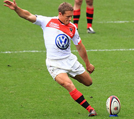

Today we want you to blow off the dust and find out how much those old (or new) bits of sports memorabilia could be worth.
Simply choose the items from the list below that you have at home and find out their value.
Choose which decade your collectables are from
- 1960s
- 1970s
- 1980s
- 1990s
- 2000s
- 2010s
To find out the value of your collection, select as many of the items below as you wish and click the calculate button below.
-
1966 Orignal World Cup Programme
Source: Barry -
Programme from Henry Cooper vs. Cassius Clay (Ali) Boxing Match
Source: Boxing VHS -
1960s Vintage Boxing Newspapers
-
1960s Ryder Cup Programme
-
1960s International Hockey Programs
Source: RIA Novosti CC BY-SA 3.0 -

1960s Vintage Tennis Racquet
Source: Evers, Joost / Anefo CC BY-SA 3.0 NL -
1960s Vintage Ladies Swimming Cap
Source: © Geolina CC BY-SA 4.0 -
1960s Vintage Badminton Shuttlecocks
Source: Joe Blake
-
1977 Racecard Grand National
Source: Rick Weston CC BY 2.0 -
1970s Signed John Hughes Rugby Groggs
Source: Grogg CC BY-SA 3.0 -
1970s Cricketers Almanacks
-

1970s TOPPS Football Trading Card
Source: Das Bundesarchiv CC BY-SA 3.0 -
1970s Subbuteo Statuettes
Source: Cropped Image: Laurent van Roy CC BY 2.5 -
1970s Complete F1 Panini Sticker Book
-
1970s Vintage Leather Football
-
1970s Dunlop Green Flash Tennis Shoes
Source: Ebay: froggywentcourting
{kind=link}
-
1980s Royal Ascot Race Programme
Source: Ebay: jazzdude47 -
1980s Horse Racing Race Card
-
1980s Rothman's Football Trading Cards
-
1980s Panini Complete Football Sticker Book
-
1980s Ryder Cup Programme
-
1980 Olympics Top Trumps Cards
Source: Ebay: evalenabeach -
1980s Rugby Union Ball - Team Signed
Source: Autographs4Every1 -
1989 Ryder Cup Tie
-
1990s Complete Sainsbury's Silver Football Coins Book
Source: Jill Raine -
1990s British Open Golf Ball Markers
Source: TheOldGolfshed -
1990s Signed Tim Henman Tennis Shirt
Source: daramot CC BY 2.0 -
Complete Set of 1990s Stadium Club Topps Trading Cards
Source: Ebay: Fab Football Cards -
1990s Football Pogs - Full Premiership Team
Source: Ebay: virgosign -

Original Adidas Predators 1994 Football Boots
-
1990s Callaway Big Bertha Golf Club
Source: Ebay: Tony Roberts -
1990s Corinthian Football Microstars
Source: Ebay: qualitybitsandbobs
-
2000s Rugby Union Premiership Final Programme
Source: Ebay: dmgreen1958 -

Johnny Wilkinson Signed Rugby World Cup Ball 2003
Source: Léna CC BY-SA 3.0 -
2000s Match Attax Football Card
Source: Ebay: poppy1234 -
2000s Complete Panini Champions League Sticker Book
Source: Ebay: rokersolreturn -
2000s Premier League Football Team Shirt
Source: Ebay: toyo010101 -

2000s Signed England Cricket Bat
Source: Exclusive Memorabilia -
2000s Rugby Union Team Shirt
-
2000s Panini Football Player Stickers
Source: Ebay: glfp
-
2012 Olympics Tickets
Source: Paul Hudson CC BY 2.0 -
Completed Panini World Cup Sticker Book
Source: grimbulini -
Collectable Fred Perry Bradley Wiggins' Badges
Source: Ebay: nismoowner69 -
Completed London 2012 50p Collection
Source: Ebay: ptb3737 -
2015 Rugby World Cup Programmes
-
Complete Set of 34 Premium Paralympic Stamps
Source: Ebay: moby390 -
London 2012 Olympic Torch
-
2013 Wimbledon Final/Semi-Final Tennis Programs
Source: Old Football Programmes
Your collection could be worth…
{kind=link}
-
1966 Orignal World Cup Programme
£199.00 -
Programme from Henry Cooper vs. Cassius Clay (Ali) Boxing Match
£397.69 -
1960s Vintage Boxing Newspapers
£2.00 -
1960s Ryder Cup Programme
£25.00 -
1960s International Hockey Programs
£1.00 -
1960s Vintage Tennis Racquet
£9.99 -
1960s Vintage Ladies Swimming Cap
£15.00 -
1960s Vintage Badminton Shuttlecocks
£3.50
-
1977 Racecard Grand National
£49.26 -
1970s Signed John Hughes Rugby Groggs
£60.00 -
1970s Cricketers Almanacks
£12.00 -
1970s TOPPS Football Trading Card
£2.49 -
1970s Subbuteo Statuettes
£11.00 -
1970s Complete F1 Panini Sticker Book
£38.93 -
1970s Vintage Leather Football
£31.16 -
1970s Dunlop Green Flash Tennis Shoes
£33.36
-
1980s Royal Ascot Race Programme
£3.25 -
1980s Horse Racing Race Card
£2.14 -
1980s Rothman's Football Trading Cards
£0.99 -
1980s Panini Complete Football Sticker Book
£79.99 -
1980s Ryder Cup Programme
£5.99 -
1980 Olympics Top Trumps Cards
£6.00 -
1980s Rugby Union Ball - Team Signed
£111.63 -
1989 Ryder Cup Tie
£19.99
-
1990s Complete Sainsbury's Silver Football Coins Book
£14.99 -
1990s British Open Golf Ball Markers
£4.90 -
1990s Signed Tim Henman Tennis Shirt
£75.00 -
Complete Set of 1990s Stadium Club Topps Trading Cards
£1.25 -
1990s Football Pogs - Full Premiership Team
£8.47 -
Original Adidas Predators 1994 Football Boots
£95.19 -
1990s Callaway Big Bertha Golf Club
£7.69 -
1990s Corinthian Football Microstars
£1.49
-
2000s Rugby Union Premiership Final Programme
£7.99 -
Johnny Wilkinson Signed Rugby World Cup Ball 2003
£138.00 -
2000s Match Attax Football Card
£0.49 -
2000s Complete Panini Champions League Sticker Book
£150.00 -
2000s Premier League Football Team Shirt
£12.49 -
2000s Signed England Cricket Bat
£51.04 -
2000s Rugby Union Team Shirt
£12.75 -
2000s Panini Football Player Stickers
£0.99
-
2012 Olympics Tickets
£29.99 -
Completed Panini World Cup Sticker Book
£29.99 -
Collectable Fred Perry Bradley Wiggins' Badges
£25.00 -
Completed London 2012 50p Collection
£79.95 -
2015 Rugby World Cup Programmes
£3.95 -
Complete Set of 34 Premium Paralympic Stamps
£23.09 -
London 2012 Olympic Torch
£3,000.00 -
2013 Wimbledon Final/Semi-Final Tennis Programs
£25.07
All values are estimates based on a number of UK auctioneers and websites.